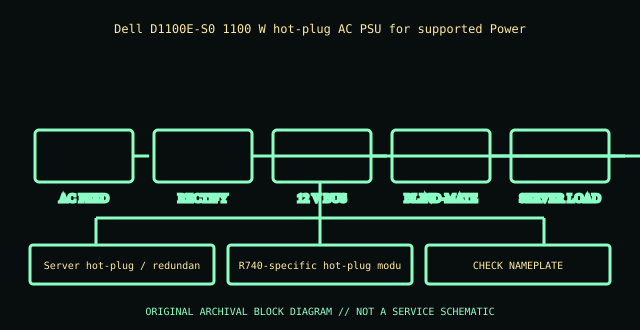

[ POWER CONVERSION // IDENTIFIED MODEL ]
Dell PowerEdge R740 1100 W PSU (D1100E-S0)
Dell D1100E-S0 1100 W hot-plug AC PSU for supported PowerEdge servers. This record applies only to the model and generation named here; similar wattage or connector shape does not establish equivalence.

HIGH-VOLTAGE WARNING: Disconnect mains before external inspection. Never open a PSU. Internal capacitors may retain lethal charge after unplugging. Do not probe or repair its interior; use qualified service or replace the unit.
Model-specific ratings & fit
| Manufacturer identity | Dell D1100E-S0 1100 W hot-plug AC PSU for supported PowerEdge servers |
|---|---|
| Form factor / generation | Server hot-plug / redundant PSU module |
| AC input | 100–240 V AC, 50/60 Hz, 12–6 A; check exact D1100E-S0 label and Dell table for region/derating. |
| DC output | +12 V 91.67 A and +12 V standby 3 A; 1100 W rated class. Not an ATX harness or generic output. |
| Dimensions / mounting | R740-specific hot-plug module/sled and blind-mate rearplane; only fits listed chassis bays. |
| Connectors | IEC mains inlet; proprietary blade interface to server power distribution board. Hot-plug is conditional on supported redundancy and service procedure. |
| Revision distinctions | D1100E-S0/EPP 1100 W is separate from 750 W and 1600 W R740 choices; confirm efficiency grade and Dell part label. |
Compatibility & safe installation
- Confirm complete model, suffix, region and revision against the unit nameplate and manufacturer manual. Do not substitute by wattage or connector-shell appearance.
- Verify AC range, per-rail and combined DC ratings, line derating, pinout, dimensions, cooling direction and qualified host support.
- Modular cables have model- and revision-specific PSU-side wiring. Use only approved leads for this exact PSU; a plug that fits may have a dangerous pinout mismatch.
- For redundant/hot-plug modules, follow the host service manual, redundancy requirements and supported replacement procedure. A server blind-mate module is not an ATX supply.
- Never open or probe a PSU. Retire damaged, wet, burnt, corroded, modified or unidentified units.
Revision & archival notes
D1100E-S0/EPP 1100 W is separate from 750 W and 1600 W R740 choices; confirm efficiency grade and Dell part label.
Archive Dell DP/N, module label, R740 configuration, input rating and service manual revision; follow hot-swap/redundancy instructions.
Archive the complete nameplate, part/spare number, manufacturing date/revision, region, connector/cable labels, mounting orientation, source document and its issue date. Separate label transcription from testing.
Manufacturer references
- Dell PowerEdge R740 1100 W PSU (D1100E-S0)Dell D1100E-S0 1100 W hot-plug AC PSU for supported PowerEdge servers. Use the exact product manual/system matrix; regional SKUs and later hardware revisions may differ.
- Intel ATX / ATX12V Power Supply Design GuideStandards reference for desktop ATX only. Server hot-swap and Flex Slot interfaces are proprietary and not interchangeable by generic ATX guidance.
Manufacturer label and applicable model/system manual take precedence over this summary.